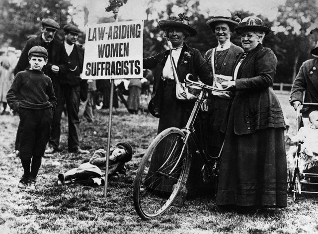

História da Bicicleta e das Mulheres
.....A bicicleta surgiu no final do século XIX como uma forma de transporte inovadora e acessível. No entanto, foi somente no início do século XX que as mulheres começaram a utilizá-la como meio de transporte. A feminista americana Susan Anthony foi uma das primeiras a defender a bicicleta como uma ferramenta para a emancipação das mulheres, pois permitia que elas se deslocassem sozinhas e com independência.
.....Na época, as mulheres eram vistas como fracas e incapazes de andar de bicicleta, e a sociedade considerava-as inapropriadas para esse tipo de atividade. Contudo, algumas mulheres começaram a usar a bicicleta como meio de transporte e como forma de desafiar as normas sociais.
.

Imagem 1- Revolta de mulheres no século XIX
Liberdade de Deslocação
.....A bicicleta permitiu que as mulheres tivessem mais liberdade de deslocação, na medida em que não dependiam mais de homens para se deslocarem. Isso significou que elas poderiam ir ao trabalho, à escola, a encontros com amigas e a muitos outros lugares sem precisar de acompanhante. Isso foi fundamental para a emancipação das mulheres, já que lhes forneceu a habilidade de se movimentarem com livre arbitrio.
Mudança do Vestuário
.....A bicicleta também ajudou a mudar o vestuário das mulheres. Antes, elas eram obrigadas a usar roupas longas e volumosas que limitavam os seus movimentos. Com a popularidade da bicicleta, as mulheres começaram a usar roupas mais curtas e ajustadas, que eram mais adequadas para pedalar. Isto foi um passo importante para a emancipação das mulheres, na medida em que lhes permitiu andarem mais confortáveis nas roupas que vestiam no seu quotidiano.
Bicicleta na Atualidade
.....Hoje em dia, a bicicleta continua a ser um meio de transporte importante para as mulheres. Além de lhes continuar a oferecer liberdade de deslocação e independência, ela também é uma opção saudável e ecológica. Além disso, este equipamento também tem sido utilizado como uma ferramenta para a promoção da igualdade de género, com eventos e campanhas relacionadas com o incentivo da utilização de bicicletas pelas mulheres. A bicicleta ainda tem um papel importante na emancipação das mulheres e continua a ser uma forma de empoderamento feminino.
..... Esta é vista como uma alternativa importante para a mobilidade urbana, pois é uma forma de transporte económico, pois ajuda a reduzir a poluição do ar e a congestão do trânsito, além de promover a atividade física e a saúde dos ciclistas. Além disso, as bicicletas podem ser um meio de transporte acessível para pessoas de baixo rendimento, e também pode ser usado para o desenvolvimento de áreas urbanas mais inclusivas e equitativas. Em resumo, o uso da bicicleta pode contribuir para uma sociedade mais saudável, equilibrada e sustentável.
Friso Cronológico
1896
Primeira competição feminina de bicicleta realizada nos Estados Unidos.
1901
As mulheres ganham direito a competir em corridas de bicicleta na Grã-Bretanha.
1917
As mulheres americanas ganham o direito de voto, e muitas começam a usar bicicletas para se deslocarem até as urnas.
1940
Durante a Segunda Guerra Mundial, as mulheres americanas usam bicicletas para trabalhar em fábricas e outros empregos tradicionalmente masculinos.
1970
As mulheres começam a organizar-se em grupos de ciclistas, lutando por direitos e segurança nas estradas.
2022
As mulheres continuam a ser ativas na indústria de bicicletas e a participar de eventos esportivos, além de serem cada vez mais representadas em cargos de liderança e empreendedorismo na área.
Marcos Históricos
- 1896: Susan B. Anthony disse: "Uma bicicleta pode fazer mais pela emancipação da mulher do que qualquer outra coisa no mundo".
- 1890-1920: o uso da bicicleta aumentou entre as mulheres, permitindo-lhes maior mobilidade e independência.
- 1917: a National Women's Party usou bicicletas num desfile organizado à frente da Casa Branca pelo direito ao voto das mulheres.